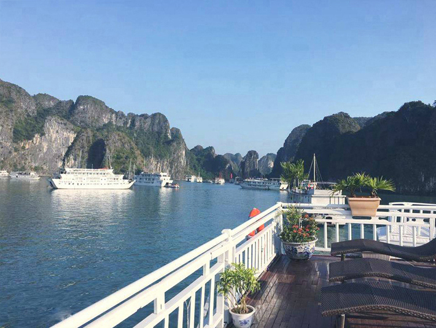

Đà Nẵng là một trong những trung tâm du lịch lớn của cả nước nên các khách sạn và nhà nghỉ nơi này rất nhiều, đủ đáp ứng có một lượng lớn người tới tham quan du lịch. Giá phòng nhà nghỉ, khách sạn có rất nhiều lựa
chọn, tùy theo du khách. Các khách sạn 2 3 sao giá khoảng 400.000đ đến 900.000đ/ phòng, khách sạn 4 5 thì giá từ 2.000.000đ đến 4.500.000đ/phòng. Đối với những người du lịch tiết kiệm thì có thể chọn các nhà nghỉ
bình dân giá khoảng 80.000đ đến 200.000đ / phòng. Để tránh tình trạng hết phòng hoặc bị chặt chém khi đi du lịch Đà Nẵng 5 ngày 4 đêm, du khách hãy liên hệ với Mytour.vn để được tư vấn đặt phòng nhanh và rẻ nhất.

Đà Nẵng nổi tiếng là thành phố của những bãi biển đẹp với cát trắng mịn, nước trong xanh. Nổi bật nhất phải kể đến Bãi Biển Mỹ Khê được tạp chí Forbes (Mỹ) bình chọn là một trong 6 bãi biển quyến rũ nhất hành tinh. Ngoài ra, các bãi biển
như Phạm Văn Đồng hay Bắc Mỹ An cũng thu hút du khách tới tham quan và tắm biển.